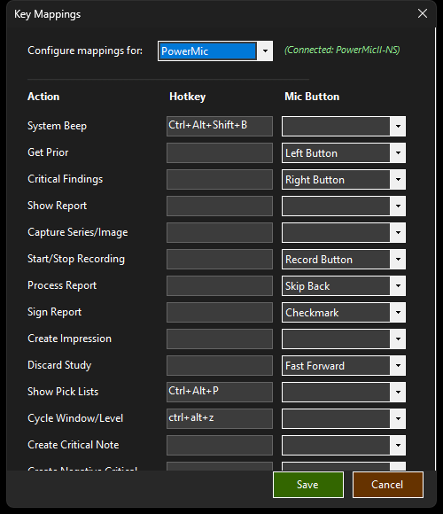

Auto Measure
Point at a lesion in InteleViewer, press a button, and get an automatic bidimensional measurement drawn over the image — ready to paste into the report.

What it does
Auto Measure captures the region of the InteleViewer image around your cursor, finds the lesion under it, and draws a bidimensional measurement overlay (long axis + perpendicular short axis, with the numbers) right on top of the image. The boundary comes from an adaptive region-growing method with edge-snap refinement, and the long axis is the largest diameter across that boundary with the short axis perpendicular through its middle — the way RECIST asks for it. Calibration is ruler-free: measurements derive from the workstation's monitor pitch and the true-size zoom level, so you don't need the on-screen ruler overlay for it to be accurate.
How to turn it on / set it up
Map the Auto Measure action to a PowerMic/SpeechMike button or hotkey under Settings → Keys & Buttons. There's no separate enable toggle — the action does the work.
Contributing your measurements (new in 5.9.7, off by default)
Settings → Profile → Contribute my accepted Auto Measure images to improve it. This is the one setting that changes how the feature behaves for you, so it is worth reading before you tick it:
- The calipers stay on screen with Accept and Reject buttons instead of fading after about five seconds, and you can drag the four ends to correct them first.
- Only what you Accept is sent. Anything you reject, or click away from, is deleted immediately — no image, no record.
- Everything outside a 3 cm border around the measurement you confirmed is blacked out before the image is saved. That removes the viewer's corner overlays, where the accession, patient name and study date are shown. The blacked-out image is then checked by text recognition, and the record is thrown away if any readable text is left.
- Your accession is never included, and your signed report is never included. The study description (for example "CT ABDOMEN PELVIS") is, because a measurement cannot be interpreted without knowing what was scanned.
- One-way and opt-in. It is a separate decision from the Spine Labeling contribution above it — ticking one does not tick the other.
Using it
- Hover your cursor over the lesion in InteleViewer.
- Trigger Auto Measure.
- The measurement overlay appears over the lesion and auto-dismisses after a few seconds — three by default, and adjustable since 5.9.17 in Settings → Auto Measure (click, or press any mouse button, to dismiss early) — unless you have turned on contributing above, in which case it waits for Accept or Reject. Focus returns to InteleViewer the moment the measurement appears, so your tool-select mouse button keeps working — no need to click the image first.
- The measurement is available to paste into the report.
Measurements come back in well under a second.
Settings
(new in 5.9.17 — Settings → Auto Measure, just under Spine Labeling)
Auto Measure previously had no settings page of its own; its two controls were stranded in other sections, which is why they were hard to find.
Time left on screen — how long a measurement stays visible before fading. Three seconds by default (it used to be a fixed five). Whatever you set, the measurement still disappears the instant you press a mouse button, so reaching for an InteleViewer tool is never blocked. This is only the idle timeout.
Leave measurements on screen (experimental) — instead of fading, each measurement stays painted on the image you took it on. MosaicTools records which image you measured and watches InteleViewer's image counter, so a measurement is drawn only while that exact image is displayed: scroll off it and the caliper goes, scroll back and it returns.
Every measurement in the study is kept, so scrolling through a series lights each one up as you reach it — including measurements in different series in different viewports, which are tracked separately. They are cleared when you move to the next study, and measuring the same lesion again replaces the old answer rather than leaving both on screen.
It needs InteleViewer's image counter (
Im: 12/240) visible in the viewport — without it there is nothing to watch, and measurements fade as usual.Why experimental: the caliper is pinned to a position on screen, so panning or zooming the image moves the anatomy out from under ink that stays where it was.
Tips & gotchas
It measures what it can segment — a lesion with almost no contrast against its background may get a poor boundary. Always eyeball the overlay before dictating the number.
Since 5.5.30 each measurement re-reads the current True Size Zoom at the moment you trigger it, so changing the on-screen zoom between measurements can no longer reuse a stale calibration and oversize the result (a 3 cm lesion could previously read ~4 cm off an old zoom). If the zoom can't be read it declines with "cannot calibrate" rather than pasting a wrong number.
With Leave measurements on screen on, panning or zooming moves the image but not the painted caliper. Scroll away and back to clear it, or re-measure.
Works with InteleViewer rulers in either yellow or orange (used only for legacy calibration; the pitch-based calibration is the default).
Retrained in 5.9.12: the measurement model was retrained on every caliper you accepted or corrected in the Measure Editor. How the feature works is unchanged - only the model behind it.